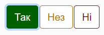

|
<< Click to Display Table of Contents >> Navigation: 1. Про нетехнічне оцінювання операційної стійкості та практик кібербезпеки організації CISA Cyber Resilience Review > 1.3. Складові оцінювання CRR |
Оцінювання CRR - відповіді на запитання кожної з цілей відповідного домену.
Кожен домен представляє важливі можливості, які сприяють кібернетичній стійкості організації.
Кількість цілей та практичних питань відрізняється для кожного домену.
Набір питань рівня показників кіберзрілості (MIL) та концепції, які вони включають, для всіх доменів однакові. Питання рівня показників зрілості оцінюють провадження практик в організації.
CRR відображає можливості організації в конкретний момент часу - на момент оцінки. Вона спрямована до розуміння управління кібербезпекою бізнес-сервісів та пов'язаних з ними активів, які є критичними для успішності місії організації. CRR вимірює важливі кібернетичні можливості та поведінку, щоб надати значущі показники операційної стійкості організації під час нормальних операцій та в умовах операційного стресу.
Оцінка не враховує:
•діяльності, які заплановані або знаходяться в процесі впровадження,
•практики, які не здійснювалися тривалий час. Наприклад, якщо у організації є план відновлення після виникнення кризової ситуації, який за відгуками учасників є застарілим до такої міри, що його неможливо використовувати, то цей план не повинен бути врахованим.
Обсяг критичної служби
Оцінювання CRR має сервісно-орієнтований підхід, який визначає його призначення для оцінки управління конкретною службою організації, критичною для її місії. Визначення обсягу оцінки має вирішальне значення, оскільки відповіді на питання CRR повинні бути надані у відношенні до конкретної служби та активів, які забезпечують цю службу.
Критична служба повинна бути вибрана і визначена як:
- набір дій, які організація виконує під час своєї діяльності або виробництві продукту, які настільки важливі, що їх порушення серйозно позначиться на подальших діях або успіху в досягненні своєї місії.
Зазвичай у організацій є набір критичних служб, які визначають їхню місію
Вибір критичної служби для оцінювання, а не оцінювання організації в цілому, допомагає визначити обсяг оцінювання та пов'язати результати з місією організації.
Нижче наведено приклади організацій та їх типових критичних послуг, які можуть бути обрані як частина оцінювання CRR:
•банки та інші фінансові установи: кліринг та розрахунки, обробка іпотечних заявок
•постачальники екстрених служб: обробка викликів 911, диспетчеризація
•електростанції: виробництво електроенергії, розподіл електроенергії
•лікарні: клінічні послуги, управління рецептами
•урядові агенції: управління справами в судах, управління соціальними виплатами
•виробничі компанії: операції обробки, обробка замовлень
•аеропорти: контроль повітряного руху, управління паливом
Структура практичних питань
Для кожного практичного питання передбачена 3-бальна шкала відповідей для оцінки ступеня впровадження кожної практики. Кожне питання має три можливі відповіді: «Так», «Не завершено» та «Ні»:

•Так – організація повністю виконує вказану в питанні дію.
•Не завершено – організація частково виконує дію
•Ні – організація не виконує дію взагалі.
Багато питань потребують окремої відповіді для кожного з чотирьох активів, тоді як інші питання посилаються на всі активи. CRR розділяє активи на чотири категорії:
•Люди - персонал (як внутрішній, так і зовнішній для організації), такі як люди, які підтримують центри обробки даних чи використовують інформаційно-комунікаційні технології для управління та моніторингу сервісу.
•Інформація - інформація облікового запису, файли конфігурації технічних активів, операційні дані, інформація про клієнтів та інша інформація, необхідна для надання послуги.
•Технологія – комп'ютери (апаратне забезпечення), програмне забезпечення, системи управління чи інші технології, включаючи зовнішні інформаційні системи, які організація використовує для надання послуг.
•Об'єкти – комп'ютери (апаратне забезпечення), програмне забезпечення, системи управління чи інші технології, включаючи зовнішні інформаційні системи, які організація використовує для надання послуг.
Оцінювання CRR використовує один стандартний набір питань рівня показників зрілості (MIL).
Методологію підрахунку балів CRR докладніше описано в розділі Як трактувати звіт за результатами оцінювання?
підготовлено у редакторі Help & Manual 9.3.0
{kind=link}